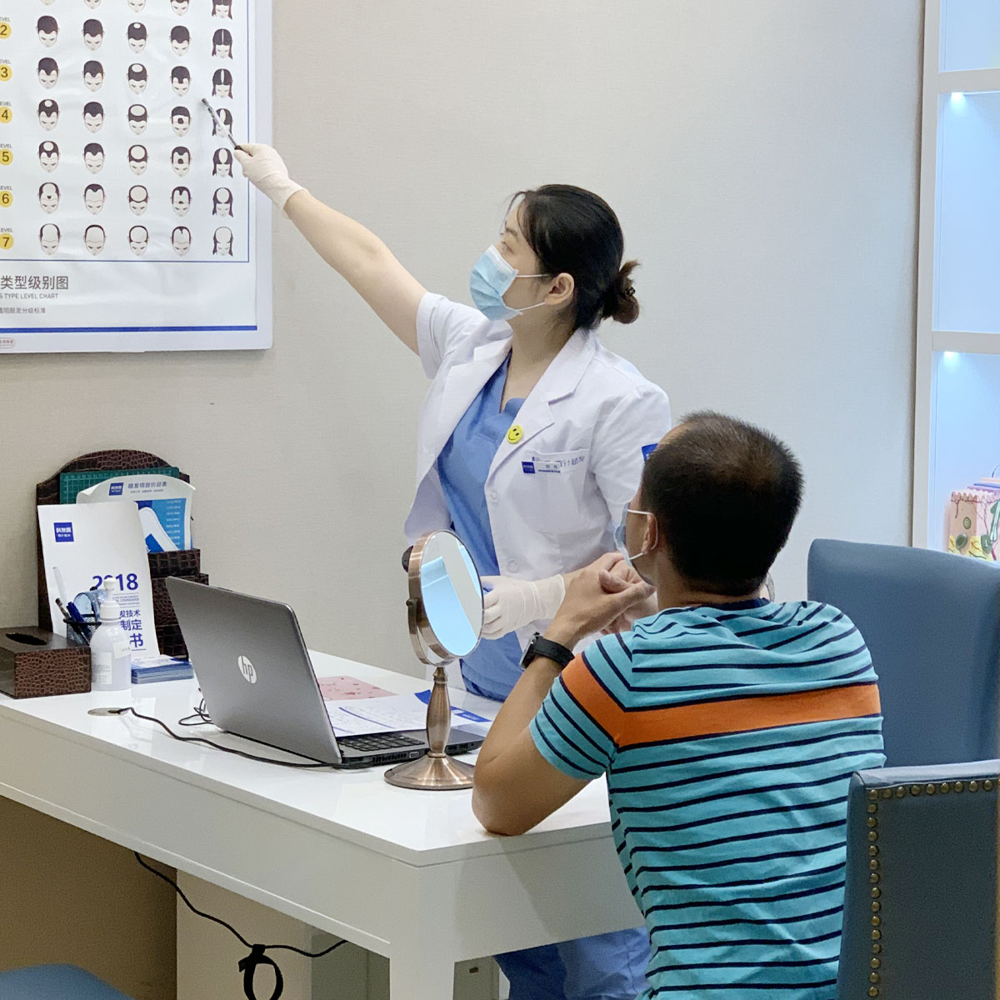

Meet our clinics & see our patented microneedle technology in action
Take a virtual tour of Barley's 30+ flagship clinics across China — 18+ years of experience, world-class sterile surgical suites, and English-speaking patient coordinators ready to serve you.
See Barley's signature 14-patent microneedle implanter pen (DHI Sapphire FUE) at work — ultra-precise graft placement, no scalpel, no linear scar, up to 98% survival rate, and faster full recovery.
Kunming, the eternal Spring City, has become a leading destination for hair restoration in Southwest China, offering world-class technology at competitive prices with perfect year-round recovery weather
Known as the "Spring City" (Chun Cheng) for its perpetually mild, spring-like climate all four seasons, Kunming is the capital of Yunnan Province and an emerging medical tourism hub perfectly positioned for patients from across Yunnan, western Guizhou, southern Sichuan, and neighboring Southeast Asian countries including Thailand, Vietnam, Myanmar, Laos, and Cambodia. The comfortable 15-25 C average year-round temperature creates ideal scalp healing conditions.
Medical tourism advantage is a major draw — many international patients combine their Kunming hair transplant with visits to Dianchi Lake, the historic Golden Horse and Jade Rooster Archway (Jinma Bijifang), UNESCO heritage sites like the Stone Forest, and traditional Yunnan cuisine. The city has direct flights to Bangkok, Chiang Mai, Hanoi, Yangon, and Vientiane, making travel seamless.
Barley Hair Transplant Hospital brings 18+ years of expertise to Kunming patients, offering advanced microneedle technology that delivers superior results with minimal discomfort and faster recovery times. Our 14 patented microneedle technologies ensure precise graft placement and natural-looking hairlines designed for every hair texture including Southeast Asian hair types.

Understanding the different methods available for hair restoration in Kunming
Minimally invasive technique that extracts individual hair follicles without linear scarring, perfect for patients from warm Southeast Asian climates who prefer short hairstyles.
Advanced technique using precision needles for higher density and more natural hair direction — Barley's proprietary method, ideal for patients traveling long distances who want maximum graft survival.
Traditional strip method suitable for patients requiring large numbers of grafts in one session — cost-effective option for those from Yunnan's regional cities who want maximum coverage.
Understand the global pricing differences — exceptional value in Kunming's Spring City
| Procedure Type | Grafts Needed | Kunming Cost (approx USD) | SE Asia Equivalent ($) | You Save |
|---|---|---|---|---|
| Hairline Restoration | 1,500-2,500 | approx $3,200-$10,700 | $3,000-15,000 | 55-65% |
| Crown Restoration | 2,000-3,500 | approx $4,300-$15,000 | $4,000-21,000 | 55-65% |
| Full Head Restoration | 3,500-5,000 | approx $7,500-$21,400 | $7,000-30,000 | 55-65% |
| Beard Transplant | 500-2,000 | approx $1,100-$8,600 | $1,000-12,000 | 55-65% |
| Eyebrow Transplant | 200-400 | approx $400-$1,700 | $400-2,400 | 55-65% |
Based on your specific hair loss condition, get a detailed cost estimate and personalized treatment plan from our experts, including SE Asia airport pickup coordination and Dianchi Lake recovery hotel suggestions.
Get Free QuoteReal stories from patients who traveled to Kunming's Spring City for their transformation
I'm a resort operator from Chiang Mai who flies to Kunming every quarter for sourcing trips. I scheduled my FUE procedure around a Dianchi Lake business visit and honestly the spring-like weather made recovery so comfortable compared to Thailand's hot season. The staff spoke basic Thai and arranged a translator for medical terms. Nine months later, my hairline has completely filled in — guests at my resort ask what hair tonic I use. Truly, combining a hair transplant with a Dianchi mini-vacation was genius.
Working as a pharmaceutical sales rep covering western Guizhou (Bijie, Liupanshui), I was losing my crown area from stress. The Kunming clinic was the closest major Barley center — I drove to Wuhua District and the team there was amazing. Post-procedure, they recommended I stroll Green Lake Park (Cuihu) which is 10 minutes from the clinic for gentle walks. The Dianchi air was so fresh during recovery. Now at month 7, I have full density back and close sales with confidence again.
I flew from Hanoi to Kunming Changshui for my beard and sideburns transplant — it was a 1-hour direct flight, shorter than flying to Ho Chi Minh. The Kunming team picked me up with a Vietnamese-speaking coordinator, helped me book a hotel 5 minutes from Wuhua District, and even printed a Jinma Bijifang walking map for my 3rd day when I felt up to light sightseeing. The results at 8 months look incredibly natural, and I flew back for a checkup last month and stopped by the Stone Forest too.
I'm a Panzhihua native from southern Sichuan working in mining — my hair had thinned badly from years of dust and helmet use. I took the high-speed rail to Kunming South and chose the microneedle package because of the mild Kunming climate vs Panzhihua's summer heat. Dr. Duan designed a natural hairline that still works with my hard-hat wearing routine. I spent recovery walking Green Lake and eating Crossing Bridge Rice Noodles every day. Perfect healing environment.
What to expect during your hair transplant recovery in Kunming's ideal climate
Scabbing, mild swelling, and tenderness are common. Take advantage of Kunming's mild 18-22 C weather for walks around Green Lake. Avoid Dianchi windy areas. Stay in a Wuhua District hotel for clinic proximity.
Scabs fall off; transplanted hairs often shed temporarily before new growth begins. This is the ideal time to explore nearby Yunnan attractions like the Stone Forest if you feel up to gentle day trips.
New hair appears gradually. Substantial cosmetic improvement is typically visible around 6 months. SE Asia patients can follow up via our international telemedicine portal without returning to Kunming.
Full results become apparent at 12-18 months. Transplanted hair grows naturally and can be styled normally. Return visits to Kunming can coincide with your annual Yunnan or SE Asia travel plans.
Everything you need to know about hair transplant in Kunming the Spring City
Our Kunming clinic is located in Wuhua District at 66 Cuihu West Road, directly adjacent to the scenic Green Lake (Cuihu Park) area — the cultural and historic heart of Kunming. The clinic is a 10-minute walk from Green Lake's lotus pond viewing platforms and 15 minutes by taxi from the iconic Jinma Bijifang (Golden Horse & Jade Rooster) Archway. The location is exceptionally convenient for both local Wuhua residents and visitors from the Dianchi Lake resort belt who combine their procedure with a Yunnan sightseeing trip.
The Barley Kunming Spring City clinic operates 7 days a week from 8:30 AM to 6:30 PM, including most Chinese public holidays. Consultation walk-ins are welcome but booking 1-2 weeks in advance is recommended, especially for the popular weekend slots (Saturday and Sunday morning) which fill quickly with regional Yunnan patients and SE Asia travelers combining their appointment with Dianchi tourism. Surgery is performed Tuesday through Saturday; international patients arriving on weekend flights typically have their consultation on Monday and procedure on Tuesday.
From Kunming Changshui International Airport (KMG): Take Metro Line 6 directly from the airport to Tangzixiang Station (approx. 35 minutes). At Tangzixiang, transfer to Metro Line 2 (northbound towards North Coach Station) for 4 stops to Green Lake Station (Cuihu). Exit B2 is a 7-minute walk to our Wuhua District clinic. From Kunming South Railway Station (high-speed rail hub from Dali, Lijiang, or Guiyang): Take Metro Line 1 to Dongfeng Square, transfer to Line 2 northbound to Cuihu Station (total approx. 50 minutes). Complimentary private car pickup is provided for international patients from SE Asia and patients booking 2500+ grafts — we'll meet you with your name sign at Changshui T2 arrivals.
Absolutely — Kunming is the premier hair restoration hub for: 1) All of Yunnan Province (Dali, Lijiang, Qujing, Yuxi, Xishuangbanna — all reachable via high-speed rail in under 2 hours); 2) Western Guizhou (Bijie, Liupanshui, Xingyi — short high-speed connections); 3) Southern Sichuan (Panzhihua, Liangshan, Xichang — direct flights or rail); 4) Southeast Asia via Kunming Changshui's 30+ international routes to Bangkok, Chiang Mai, Hanoi, Ho Chi Minh, Yangon, Vientiane, Phnom Penh, and more — most flights 1.5-3 hours. Most SE Asia patients stay 4-5 nights in Kunming, combining the procedure with Dianchi Lake or Stone Forest day trips.
Barley Microneedle Hair Transplant Hospital maintains strict medical team qualification standards across all clinics. All chief surgeons at our Kunming clinic hold valid Chinese medical practitioner licenses with 12+ years of specialized hair restoration experience, and personally perform all pre-op mapping, donor harvesting, site creation, and hairline implantation for every case — never delegating critical steps to trainees. Our Kunming chief surgical team has deep expertise with Southeast Asian and Yunnanese hair textures (which tend to be thicker, wavier, and with distinct donor characteristics), especially known for signature soft hairline designs popular with professionals from Kunming's tourism and hospitality sectors, and for eyebrow transplants that look natural even under traditional Dai ethnic clothing makeup. Each clinic operates under hospital-level operating licenses, with sterile dedicated ORs, mandatory 24-month graft survival tracking, transparent written itemized quotes, and certified medical interpreters on staff for SE Asia patients with basic English, Thai, and Lao support.
Top patient-recommended choices within 15 minutes' walk of our Wuhua/Cuihu clinic: 1) Grand Park Hotel Kunming (5-minute walk, 5-star, approx. $97/night) — overlooks Green Lake itself, quiet rooms with filtered air perfect for post-op rest; 2) Green Lake Hotel (8-minute walk, 4-star, approx. $60/night) — the most popular with SE Asia patients, includes breakfast near Cuihu's bamboo groves; 3) Holiday Inn Express Kunming Green Lake (12-minute walk, approx. $46/night) — excellent value with free airport shuttle. All three have negotiated Barley patient discounts (10-15% off) — just show your consultation confirmation email at check-in. Most international patients book 4-5 nights, with the first 2 nights for immediate rest then light Dianchi or Jinma Bijifang exploration on days 3-4.
Kunming's mild spring weather and delicious Yunnan cuisine make recovery genuinely pleasant. For food — stick to non-spicy, gentle dishes for the first week: try Guoqiao Mixian (Crossing-Bridge Rice Noodles) at the historic Jianxin Garden restaurant near Jinma Bijifang, or mild steam pot chicken (Qiguo Ji) at Shilin Restaurant by Green Lake. Avoid the very spicy Yunnan chili pots during your first two weeks. For gentle daytime activities during rest days: walk the tree-lined perimeter of Green Lake (Cuihu) feeding the black-headed gulls in winter, visit the adjacent Yuantong Temple (Buddhist temple with peaceful gardens), or take a 25-minute taxi to Haigeng Dam along Dianchi Lake for lakeside breezes. After your 1-week check-up, day trips to the Stone Forest (Shilin, UNESCO site — 90 mins by car) or Western Hills Dragon Gate (overlooking Dianchi) are doable at a gentle pace. Skip strenuous hikes, and skip Lijiang/Dali's high-altitude trips until after your 1-month follow-up.
Barley Kunming offers world-class hair restoration at competitive prices — enjoy the Spring City's eternal spring weather, Dianchi Lake views, and seamless Southeast Asia travel connections during your transformation. With experienced surgeons, advanced microneedle technology, and dedicated SE Asia patient coordinators, your new hair starts here.
Schedule Free ConsultationClick to copy contact information — SE Asia patient coordinators on standby
15810155700
+86 13730143529
hairtransplant@qq.com

Every SE Asia and regional Yunnan patient receives personalized coordination: we can arrange Changshui Airport pickup, Green Lake-area hotel bookings with Barley discounts, and post-operative Dianchi walking maps. The mild Kunming climate year-round means no extreme heat or cold affecting your scalp recovery.